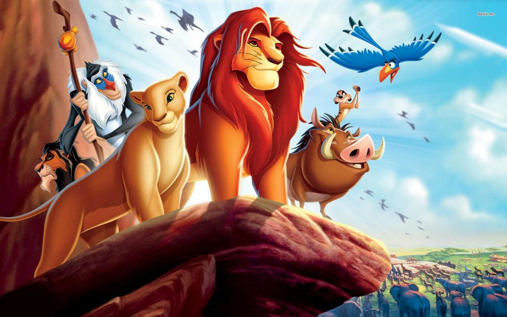

About The Lion King
The Lion King is an old story articulating our continuous struggle between order and chaos. It details the life of Simba, a young lion, who rose out of the ashes to avenge his father's death and bring back order to the Pride Lands.
Simba and his friends
Simba's Characteristics
- He's a great leader
- He's courageous
- He's resilient
Simba's Friends
Simba has some great friends who helped him develop courage and adopt responsibility. This resulted in the making of a hero, who walked out of the shadow and into the light. Click on the links below to read more about them.